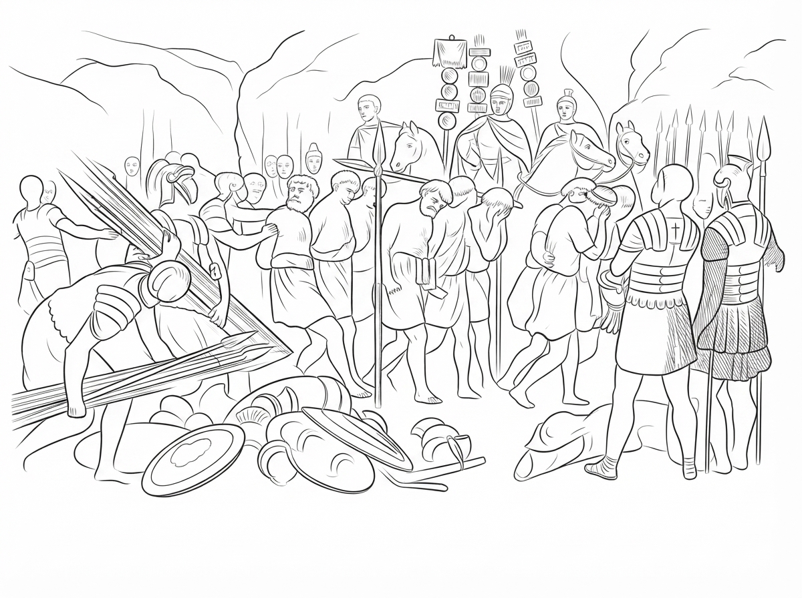

第 11 章，共 12 章
陪他走兩里路

森丘里在羅馬軍隊中服役了二十年。按照軍中的制度，他原本還可以再服役幾年，然後退伍。退伍之後，他可以得到一筆退伍金，或獲得一塊土地。那原本是一條安穩的人生道路。
可是，這些現在都不在他的心裡了。他已經成了一個平民。他時常想起昔日的戰友們，尤其是從前一起開心、一起抱怨的好友。
他現在有更重要的事情要與他們分享。
他遇到了他從前的屬下提多。提多對他的逃跑，以及現在又回來了，感到驚訝，也很想知道他的故事。
提多帶著一大箱貨物。他正站在羅馬道路上的一塊石碑前，要強迫一名非羅馬公民扛他的貨物。在羅馬統治下，士兵可以徵用當地人的勞力，替他們搬運軍需和行李。
森丘里看著那個人，心裡有些不忍。他對提多說：
「我來幫你扛吧。」
為了與提多單獨交談，他伸手接過貨物。可是提多不願意讓森丘里扛。
「不用，你不要扛。」
提多堅持要自己扛。結果兩人一起走上羅馬大道。
過了一會兒，提多忍不住問：
「在城市廣場傳道的時候，你逃走了。那你跑去哪裡了？」
「我找到了。」森丘里回答。
提多愣了一下。他以為森丘里在樹林裡發現了寶藏什麼的。森丘里笑了笑，繼續說：
「你記得那個猶太人彼得說過嗎？」
「釘在十字架上的耶穌，已經從死裡復活了。」
「這是真的。」
提多沉默了一會兒。
其實，他自己也聽過耶穌講道。甚至在耶穌受難之後，他也從別人口中聽過許多關於耶穌的事。他主要是從那些被他強迫扛重物走一里路的人中聽到的。他們是耶穌的追隨者，大部分是猶太男人、女人，甚至還有男孩和女孩。
他們很不一樣。他們不會抱怨自己被迫扛了太多東西。有些人甚至願意多走一里路，只是為了告訴提多更多關於耶穌的事。他們說話有禮貌，也很有修養。更奇怪的是，他們所說的一切，似乎都不是捏造的。
提多注意到，即使是那些逼迫耶穌的猶太人，也無法完全否認這些事情。而那些陪他走兩里路的耶穌追隨者，在離開以前，總是會問他一個問題：
「你相信嗎？」
現在，就連他的摯友森丘里，也告訴他同樣的事情。
而森丘里的轉變是真的。提多看著他的臉。他現在的臉上有一種從前沒有的光彩，不像以前那樣，總是一臉疲憊和沮喪。
「可是，耶穌的受死和復活，和我們有什麼關係？」提多問。
兩人繼續走著。提多不是那種拿起書就認真讀的人。他大概只是隨便讀讀。提多笑著說：
「我這個單純的頭腦，實在無法把愛情、罪與罰、軍事、物理學和亞里士多德，全部放在一起想。」
森丘里也笑了。提多又說：
「而且，我也不想隨便評論耶穌。」
「除了凱撒以外，沒有其他的王。」
他沉默了一會兒。然後說：
「可是，我心裡一直有一個問題。」
「如果真的有一位創造天地的神，祂為什麼要看著人彼此殺戮，彼此滅亡？」
森丘里看著前方的道路。過了一會兒，他說：
「動物生而死，這是牠們的天性。」
「人類有生有死，這也是我們的天性。」
提多點點頭：「這一點，我不反對。」
森丘里接著說：
「偉大的君王征服了其他國家，最後還是死了。」
「沒有人是不朽的。」
「可是，人為什麼要互相殺戮？」森丘里說。
提多沒有回答。森丘里繼續說：
「因為人的心裡有自私，也有邪惡。」
「不是所有的人都是邪惡的。」提多立刻反駁。
「人還是有人性的善良。」
森丘里點點頭說：「我知道。」
「可是，你能保證一個人的善良永遠不會改變嗎？」
提多沒有回答。森丘里繼續說：
「一個人今天可以很好，明天也可以很好。」
「可是，如果給他足夠大的誘惑呢？」
「如果給他足夠多的金錢呢？」
「如果讓他擁有足夠大的權力呢？」
提多沉默了。他知道森丘里說的是事實。人的善良，有時是真的。但人的善良並不完全。它可能被恐懼改變，也可能被利益改變。更不可能永遠完美。
森丘里想起耶穌曾經說過的話：
「你們要完全，因為你們的天父是完全的。」
他慢慢說：
「耶穌說的『完全』，不是一兩天做一個好人。」
「祂說的是完全。」
提多低頭看著腳下的羅馬道路。走了一會兒，他忽然說：
「我記得以前讀書的時候，老師談過蘇格拉底。」
「我們那時候談過人的靈魂，也談過什麼樣的人才是真正聖潔的人。」
他抬起頭，看著森丘里。
「可是，如果沒有一個人能夠永遠正直呢？」
森丘里停下腳步。他看著提多。
「你剛才說得對。」
「世界上沒有一個人能夠永遠正直。」
「過去沒有。」
「現在沒有。」
「未來也不會有。」
他停頓了一會兒。然後說：
「除了一個人。」
提多看著他。森丘里平靜地說：
「耶穌。」
「祂是神的兒子。」
提多沒有說話。森丘里繼續說：
「祂被我們釘死在十字架上。」
「而現在，我知道了。」
「那並不是一場偶然發生的悲劇。」
「天父早已知道人類會把祂的兒子釘在十字架上。」
「可是，天父仍然愛世人。」
「祂甚至賜下祂的獨生子耶穌，來除去世人的罪孽。」
提多慢慢走著。他沒有說話。森丘里也沒有催促他。
過了一會兒，森丘里說：
「你知道我在十字架下看見什麼嗎？」
提多搖搖頭。
「我看見一個無罪的人，替有罪的人受苦。」
「我看見一個本來不需要死的人，為我們死了。」
「我以前以為，那是失敗。」
「現在我才知道，那是救贖。」
提多慢慢地抬起頭。
「可是，為什麼一定要死？」
森丘里回答：
「因為罪帶來死亡。」
「我們自己犯罪，又怎麼能靠自己除去自己的罪？」
「一個有罪的人，連自己的罪都承擔不起，又怎麼能替別人承受審判？」
提多沒有回答。森丘里說：
「可是上帝可以。」
「祂把祂的兒子賜給我們。」
「耶穌不只是我的老師。」
「祂是神的兒子。」
「只有無罪的聖子，才能承擔這個重擔。」
「這是上帝賜給人的最大禮物。」
「祂正在改變人類的命運。」
兩人又走了一段路。羅馬大道上，其他被迫扛重物的耶穌追隨者，也在談論他們所看見的復活。提多聽著他們的聲音。過了一會兒，提多說：
「死亡是魔鬼對抗人類最強大的武器。」
森丘里看著他。提多繼續說：
「魔鬼可以引誘人的慾望。」
「讓人好色、貪婪、偷竊、犯罪。」
「人違反了神的律法，最後就要面對死亡。」
「而魔鬼就利用人的罪與死亡來控告人、轄制人。」
「這不是很可怕嗎？」
「所以，天父給世人的救恩，才是無與倫比的禮物。」森丘里點點頭回答。
提多想起曾經聽人說過的一句話：
「祂要永遠吞滅死亡，並抹去人臉上的眼淚。」
提多的聲音慢慢低了下來。
「救贖，就是人離開罪惡和死亡，進入神國度的道路。」
「正如彼得所說，要悔改，離開這彎曲的世代。」
提多沉默了很久。他沒有再反駁。他開始明白，真正的問題不是世界上有沒有好人。而是人能不能靠自己的善良，成為完全聖潔的人？
正因為聖潔的天父存在，人類的罪才顯出它真正的可怕。
「那麼，恩典呢？」提多忽然說。
「如果罪這麼大，恩典是不是更大？」
「是。」森丘里笑了。
森丘里想了一會兒，說：
「我以前把罪看得太小，把自己看得太大。」
「現在我才知道，罪在哪裡顯多，恩典就更顯多了。」
「罪就像一個小小的污水罐。」
「可是恩典，像一個廣大的清水缸。」
「污水再多，也不可能把整缸清水變成污水。」
「因為清水不斷湧入。」
提多低頭沉思，說：「那要非常、非常多的清水。」
森丘里接著說：「正是。」
「如果一個人拒絕這麼大的救恩，赤身裸體地站在審判台前，那將是多麼可憐。」
「他沒有任何東西可以遮蓋自己的赤裸。」
「最後，只能面對永遠的死亡。」
提多停下腳步。他看著森丘里。
「你可以教我怎麼禱告嗎？」
森丘里看著他的眼睛。他看見提多眼中的疑惑，正在慢慢變成信靠。他們停在羅馬大道旁。森丘里帶領提多，一起禱告主禱文。路上其他被迫扛重物的耶穌追隨者，看見提多歸信主，也歡呼雀躍。
提多的行動是勇敢的。
森丘里陪他走兩里路，也是勇敢的。
而我從高處看著這一切。我看到寬闊的羅馬道路上，滿是陪走兩里路的基督徒。他們關心別人的靈魂得救。他們按照耶穌所說的去做：
「若有人強迫你走一里路，
就陪他走兩里路。」
我忽然明白了。原來，主耶穌的榮光，不只是在祂復活的清晨，也在這條羅馬大道上。
當一個人願意多走一里路，
當一個人願意放下自己的權利，
當一個人願意為另一個人的靈魂停下腳步，
這就是主耶穌的榮光。